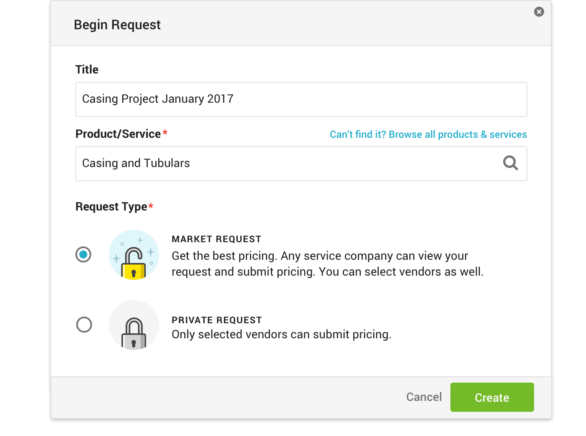
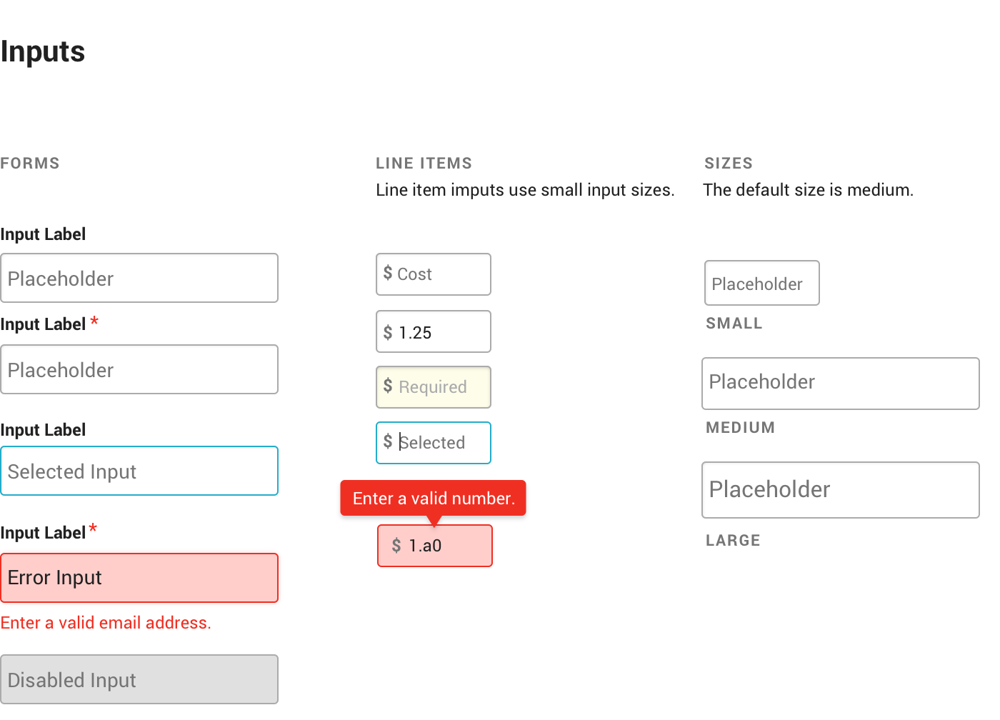
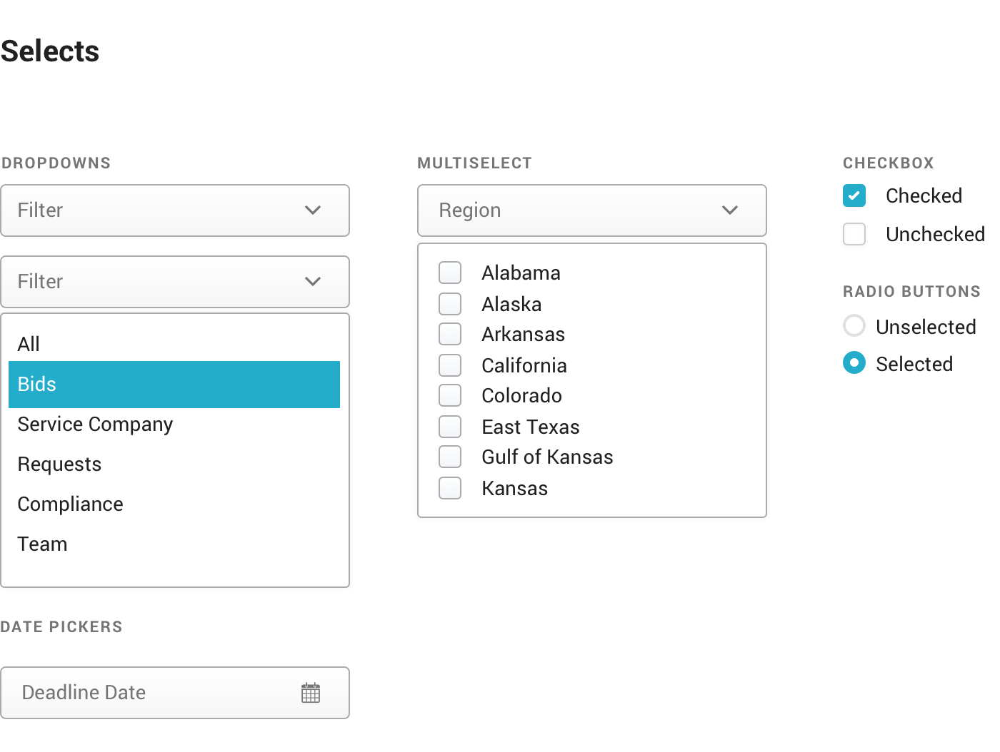

RigUp
Making it easy to bid out complex oilfield jobs

For two years I lead design at RigUp, an oilfield services marketplace where we made bidding out work easier and more transparent, while maintaining safety and environmental standards.
The bidding process where buyers in the oilfield bid out work to vendors and select who wins to perform the job. Historically, the process is inefficient and scattered across faxes, phone calls, and a Rolodex.
Here's the initial design for creating and sending a bid request, a 6 step wizard UX.
There were a couple of problems we discovered through usability testing sessions, feedback from the customer success and sales team, and data analytics.
Chunking the bidding process into six separate steps decreased conversion rates. Using Heap, I was able to pinpoint the drop-off point where we were losing users in the request creation process.
Isolating the steps did not give users enough context to understand the process.
I designed a new UX that reduced the process to 3 steps.
Instead of immersing the user in a lengthy request process to begin with, I designed a modal to prompt them with the absolute basics - what they are requesting and the type of request.
Defining the request is where the majority of users dropped off in the bidding process. In the initial design, this was broken into three separate steps. I knew we needed to simplify the process - but how?
Before RigUp, bids are usually submitted as a PDF or Excel spreadsheet. I compared a bunch of bids and identified a pattern in how they were compiled. This insight informed my design for a UI that touched on a familiar frame of reference for users. The workscope and request details were the header of the submission, with line items and pricing information below that.
Once the request is defined, buyers can select who they want to request a quote from. Finding vendors to bid out to is difficult since a lot of them are mom and pop shops without a website. As a result, many companies stick to using vendors that they already know - even if they aren't the safest or best for the job. I designed a marketplace that makes it easy for buyers to find vendors by their services, location, and safety ratings.

After the request is sent, the user waits for the pricing submissions to roll in. Historically, the bidding process is scattered across phone calls, emails, and faxes. With RigUp, centralizing pricing and communication in one place ensures that confidential documents would not be lost in the shuffle.
During a sales demo of our product (user feedback comes from everywhere!), we learned that the design didn't scale well with large requests. The card UI for pricing made it difficult to flip through submissions.
We also made submitting bids easier for vendors. Many vendors are out in the field away from their computers, so designing a mobile-first experience for them was crucial. Mobile usage is double the amount for vendor users compared to buyer users (32% vs 16%).


We made it easy to bid out work but it was still difficult to compare pricing.
“I loved the bidding process, but 99% of my time is still consumed on the week long effort of comparing each bid to one another.” - Petroleum Engineer User
Every vendor has a different way of pricing and naming their products/services. Traditionally, normalizing pricing meant manipulating cost variables in Excel, which could take weeks.
I designed a solution that kept everything in-app and eliminated the time-consuming demands of Excel, ensuring standardized pricing through input validation.

I joined RigUp early on as their only designer, where shipping fast to validate ideas were priority. Creating a design language wasn’t critical at this stage, but a year later I was leading a design team, and our product had quickly reached a level of complexity where our design debt was affecting our efficiency.
We were wasting time creating existing interface components - leading to an inconsistent user experience and bloating our code base with redundancy.
 The pattern library is an ongoing process. We have just begun the gradual implementation of its core components. It has already proved valuable as a common ground for designers and developers to reference the rationale behind design decisions, as well as understand context and use cases of patterns.